11 Kernel Methods
A kernel method aims to transform a non-linear problem into a linear problem. This is usually done by increasing the number of dimensions of the space to which the elements of the learning set belong.
11.1 Space Transformation
Let’s see a simple example to understand the mechanism. In Figure fig-metodi-kernel-esempio-spazio-originale we observe a one-dimensional data set classified as \(X\) and as \(O\). This is a clear example of a problem where the classifier is the threshold function, which we remember has a VC dimension of \(1\): in the example shown, in fact, it is not possible to identify a threshold to correctly classify all the points. In Figure fig-metodi-kernel-esempio-spazio-trasformato we see how the problem was solved: the space was transformed, moving from \(\mathbb{R}\) to \(\mathbb{R}^2\) keeping the coordinate \(x\) and adding the coordinate \(y=x^2\). It is clear how, in this way, it is possible to identify a hyperplane that correctly classifies all the points.
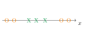
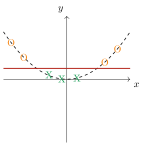
In Figure fig-metodi-kernel-esempio-2, on the other hand, another example is shown, in which the dimension of the space remains the same but the transformation is still necessary to obtain a linear classifier: passing from \((x,y)\) to \((x,z)=\left(x,\sqrt{x^2+y^2}\right)\), in fact, we clearly find the hyperplane that divides the two data sets, corresponding to a circumference in the original space.
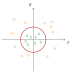
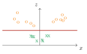
What we have done is to define a mapping \(\psi\) that acts from the input space to another space, which can also be of a larger dimension. Formally:
Given a domain \(\mathcal{X}\) and a learning task, a mapping to a new feature space \(\mathcal{F}\) is identified:
\[ \psi:\mathcal{X}\to\mathcal{F} \]
\(\mathcal{F}\) can be any Hilbert space, even of infinite dimension.
Given a sequence of already labeled samples \(\mathcal{S}=\left\{\left(\boldsymbol{x_1},y_1\right),\dots,\left(\boldsymbol{x_n},y_n\right)\right\}\), this is mapped through the application \(\psi\):
\[ \hat{\mathcal{S}}=\left\{\left(\psi\left(\boldsymbol{x_1}\right),y_1\right),\dots,\left(\psi\left(\boldsymbol{x_n}\right),y_n\right)\right\} \]
The learning process is applied to the set \(\hat{\mathcal{S}}\), finding a linear predictor \(h\)
The prediction of the label associated with the point will be obtained by applying \(h\) to \(\psi(\boldsymbol{x})\):
\[ y=h(\psi(\boldsymbol{x})) \]
11.2 The Kernel Trick
When we have to increase the dimension of the space to linearize the problem, we run into a potential problem, which is the increase in the computational complexity of the algorithm, which must be trained on a higher-dimensional space.
To solve the problem we can use the so-called kernel trick: by kernel we mean the dot product between the points in the transformed space; indicating with \(K(\boldsymbol{x},\boldsymbol{x'})\) the kernel relative to the points \(\boldsymbol{x}\) and \(\boldsymbol{x'}\), the equivalence holds
\[ K(\boldsymbol{x},\boldsymbol{x'})=\langle\psi(\boldsymbol{x}),\psi(\boldsymbol{x'})\rangle \]
The kernel trick exploits the fact that in certain cases it is possible to derive \(K(\boldsymbol{x},\boldsymbol{x'})\) without having to calculate \(\psi(\boldsymbol{x})\) and \(\psi(\boldsymbol{x'})\), and if the latter are computationally expensive to calculate as the dimension increases, the kernel is often faster to derive independently. Formally, we will have that the kernel trick is convenient if
\[ {\mathcal{O}}(K(\boldsymbol{x},\boldsymbol{x'}))\ll{\mathcal{O}}(\langle\psi(\boldsymbol{x}),\psi(\boldsymbol{x'})\rangle) \]
Let’s see a simple example; let’s consider a generic point \(\boldsymbol{x}\in\mathbb{R}^d\) and a mapping \(\psi(\boldsymbol{x})\) such that
\[ \psi(\boldsymbol{x})=\left(1,x_1,x_2,\dots,x_d,x_1x_1,x_1x_2,\dots,x_2x_2,x_2x_3,\dots,x_dx_d\right) \]
It takes all the unique combinations starting from the elements of \(\boldsymbol{x}\) in order to obtain the terms of a second-degree polynomial. If the zero-degree term is only one and the first-degree terms are \(d\), the second-degree terms are equal to
\[ d+(d-1)+(d-2)+\dotsc+2+1=\frac{d(d+1)}{2} \]
from which we obtain the total dimension:
\[ \frac{d(d+1)}{2}+d+1=\frac{1}{2}d^2+\frac{1}{2}d+d+1=\frac{1}{2}d^2+\frac{3}{2}d+1 \]
The calculation of the dot product will give:
\[ \langle\psi(\boldsymbol{x}),\psi(\boldsymbol{x'})\rangle=1+\sum_{i=1}^dx_ix_i'+\sum_{i=1}^d\sum_{j\geqslant i}^dx_ix_jx_i'x_j' \]
which scales as \(\sim d^2\).
Focusing on the second-degree terms, we notice that we can conveniently reorder the terms:
\[ \sum_{i=1}^d\sum_{j\geqslant i}^dx_ix_jx_i'x_j'=\left(\sum_{i=1}^dx_ix_i'\right)\left(\sum_{j\geqslant i}^dx_jx_j'\right)=(\sprod{x}{x'})^2 \]
The kernel, therefore, can be written as
\[ K(\boldsymbol{x},\boldsymbol{x'})=1+\sprod{x}{x'}+(\sprod{x}{x'})^2 \]
This quantity, unlike the previous one, scales as \(\sim d\), since it is sufficient to calculate the dot product between \(\boldsymbol{x}\) and \(\boldsymbol{x'}\), which scales precisely as \(\sim d\), to obtain all the terms of the sum.
From this example we understand how it is not necessary to calculate the points in the transformed space to calculate their dot product \(K(\boldsymbol{x},\boldsymbol{x'})\), as it is sufficient to use the same \(\boldsymbol{x}\) from the original space.
11.2.1 Application to Support Vector Machines
What we want to do now is to apply what has been written to Support Vector Machines, to find the separating hyperplane in cases where we are forced to increase the dimension of the input space to linearize the problem.
We recall that the objective is to minimize a quantity, namely the Regularized Loss, which in general form can be written as
\[ \min_{\boldsymbol{w}}\bigg(f\Big(\left\langle\psi\left(\boldsymbol{x_1}\right),\boldsymbol{w}\right\rangle,\left\langle\psi\left(\boldsymbol{x_2}\right),\boldsymbol{w}\right\rangle,\dots,\left\langle\psi\left(\boldsymbol{x_m}\right),\boldsymbol{w}\right\rangle\Big)+R(\norm{\boldsymbol{w}})\bigg) \tag{11.1}\]
Let’s see the two cases: that of hard-SVM and that of soft-SVM.
Hard-SVM: \(\argmin\limits_{(\boldsymbol{w},b)}\norm{\boldsymbol{w}}^2 \hspace{0.65cm} \text{with} \hspace{0.35cm} y_i(\sprod{x_i}{w}+b)\geqslant1 \hspace{0.35cm} \forall i\)
The function \(f\) is absent in this case, as the constraint is explicitly expressed separately. We could express the constraint through \(f\) by defining it in the following way:
\[ f\left(z_1,z_2,\dots,z_m\right)= \begin{cases} 0 \ \ \ &\text{if} \ \exists b:y_i\left(z_i+b\right)\geqslant1 \ \forall i\\ \infty \ \ \ &\text{otherwise} \end{cases} \]
In this way, when the condition is met the function is zero as it should be, while when it is not met the result is infinite, regardless of the value of \(R(\norm{\boldsymbol{w}})\) that is added, so when the constraint is not met the value of \(\boldsymbol{w}\) will certainly not be a “candidate” as a possible minimum.
The function \(R\) is clearly given by
\[ R(a)=a^2 \]
Soft-SVM: \(\min\limits_{\boldsymbol{w},b}\left(\frac{1}{m}\sum\limits_{i=1}^m\max\left(0,1-y_i(\sprod{x_i}{w}+b)\right)+\lambda\norm{\boldsymbol{w}}^2\right)\)
The function \(f\) is clearly equal to (We are assuming the transformation into homogeneous coordinates is valid, since in practice it changes little.)
\[ f\left(z_1,z_2,\dots,z_m\right)=\frac{1}{m}\sum_{i=1}^m\max\left(0,1-y_iz_i\right) \]
The regularization function, on the other hand, will be
\[ R(a)=\lambda a^2 \]
11.3 Representation Theorem
The heart of the application of the kernel trick to Support Vector Machines lies in the following theorem, in which it is shown that the optimal solution to the problem expressed in (eq-metodi-kernel-problema-svm) is equal to a linear combination of the points in the transformed space.
Let \(\psi\) be a mapping from the domain \(\mathcal{X}\) to a Hilbert space \(\mathcal{F}\). Then, there exists a vector \(\boldsymbol{\alpha}\in\mathbb{R}^m\) such that
\[ \boldsymbol{w}=\sum_{i=1}^m\alpha_i\psi\left(\boldsymbol{x_i}\right) \]
is an optimal solution to the problem (eq-metodi-kernel-problema-svm), assuming that the function \(R\) is monotonically increasing.
Let \(\boldsymbol{w^*}\) be an optimal solution to the problem (eq-metodi-kernel-problema-svm). It belongs to a Hilbert space as does the image of the mapping \(\psi(\boldsymbol{x})\).
Considering the set of elements \(\left\{\boldsymbol{x_1},\boldsymbol{x_2},\dots,\boldsymbol{x_m}\right\}\subset\mathcal{X}\) of (eq-metodi-kernel-problema-svm), their mapping \(\left\{\psi\left(\boldsymbol{x_1}\right),\psi\left(\boldsymbol{x_2}\right),\dots,\psi\left(\boldsymbol{x_m}\right)\right\}\) represents a subspace of \(\mathcal{F}\) that we can denote by \(\mathcal{F}_m\). Any element of \(\mathcal{F}\) can be expressed as the sum of two components: one belonging to the subspace \(\mathcal{F}_m\) and one belonging to the space orthogonal to it, in the sense that this component is orthogonal to all the vectors of \(\mathcal{F}_m\). Indicating this orthogonal component with \(\boldsymbol{u}\) we will write:
\[ \boldsymbol{w^*}=\sum_{i=1}^m\alpha_i\psi\left(\boldsymbol{x_i}\right)+\boldsymbol{u} \]
Intuitively, we are dividing \(\boldsymbol{w^*}\) into the “part” that is in \(\mathcal{F}_m\) and the part that is outside of it. It is clear that if the dimension of \(\mathcal{F}\) is less than \(m\) then the component \(\boldsymbol{u}\) is absent and the vectors \(\psi\left(\boldsymbol{x_i}\right)\) cannot all be linearly independent of each other.
Let:
\[ \boldsymbol{w}=\sum_{i=1}^m\alpha_i\psi\left(\boldsymbol{x_i}\right) \ \Longrightarrow \ \boldsymbol{w^*}=\boldsymbol{w}+\boldsymbol{u} \]
The objective is to show that \(\boldsymbol{w}\) is also an optimal solution for (eq-metodi-kernel-problema-svm). We divide the proof into two parts, each referring to a term of the generalized loss:
Function \(f\)
Let’s make the dot product between \(\psi\left(\boldsymbol{x_i}\right)\) and \(\boldsymbol{w^*}\) explicit:
\[ \left\langle\psi\left(\boldsymbol{x_i}\right),\boldsymbol{w^*}\right\rangle=\left\langle\psi\left(\boldsymbol{x_i}\right),\boldsymbol{w}+\boldsymbol{u}\right\rangle=\left\langle\psi\left(\boldsymbol{x_i}\right),\boldsymbol{w}\right\rangle+\left\langle\psi\left(\boldsymbol{x_i}\right),\boldsymbol{u}\right\rangle \]
The last term is zero by the very definition of \(\boldsymbol{u}\), so we find that
\[ \left\langle\psi\left(\boldsymbol{x_i}\right),\boldsymbol{w^*}\right\rangle=\left\langle\psi\left(\boldsymbol{x_i}\right),\boldsymbol{w}\right\rangle \]
Since the function \(f\) depends on these dot products, it follows that choosing \(\boldsymbol{w}\) instead of \(\boldsymbol{w^*}\) the result remains the same.
Function \(R\)
Let’s make the norm of \(\boldsymbol{w}^*\) explicit:
\[ \norm{\boldsymbol{w^*}}^2=\norm{\boldsymbol{w}}^2+\norm{\boldsymbol{u}}^2\geqslant\norm{\boldsymbol{w}}^2 \ \Longrightarrow \ \norm{\boldsymbol{w}}^2\leqslant\norm{\boldsymbol{w^*}}^2 \]
It follows that
\[ \norm{\boldsymbol{w}}\leqslant\norm{\boldsymbol{w^*}} \]
Since \(R\) is a monotonically increasing function:
\[ R(\norm{\boldsymbol{w}})\leqslant R\left(\norm{\boldsymbol{w^*}}\right) \]
Since the result of the function \(f\) is the same while that of the function \(R\) is less than or equal to, it follows that \(\boldsymbol{w}\) is an optimal solution, as predicted by the thesis.
11.3.1 SVM Model with Kernel Functions
The theorem just seen is useful for rewriting (eq-metodi-kernel-problema-svm), in fact:
\[\begin{align*} &\left\langle\psi\left(\boldsymbol{x_i}\right),\boldsymbol{w}\right\rangle=\left\langle\psi\left(\boldsymbol{x_i}\right),\sum_{j=1}^m\alpha_j\psi\left(\boldsymbol{x_j}\right)\right\rangle=\sum_{j=1}^m\alpha_j\left\langle\psi\left(\boldsymbol{x_i}\right),\psi\left(\boldsymbol{x_j}\right)\right\rangle\\ &\norm{\boldsymbol{w}}^2=\sprod{w}{w}=\left\langle\sum_{i=1}^m\alpha_i\psi\left(\boldsymbol{x_i}\right),\sum_{j=1}^m\alpha_j\psi\left(\boldsymbol{x_j}\right)\right\rangle=\sum_{i,j=1}^m\alpha_i\alpha_j\left\langle\psi\left(\boldsymbol{x_i}\right),\psi\left(\boldsymbol{x_j}\right)\right\rangle \end{align*}\]
By making the kernel function \(K\) explicit, the optimization problem becomes:
\[ \boxed{\min_{\boldsymbol{w}}\left(f\left(\sum_{j=1}^m\alpha_jK\left(\boldsymbol{x_1},\boldsymbol{x_j}\right),\dots,\sum_{j=1}^m\alpha_jK\left(\boldsymbol{x_m},\boldsymbol{x_j}\right)\right)+R\left(\sqrt{\sum_{i,j=1}^m\alpha_i\alpha_jK\left(\boldsymbol{x_i},\boldsymbol{x_j}\right)}\right)\right)} \]
It is convenient to rewrite this formula in a compact form using matrices. To this end, the Gram matrix is defined:
\[ G= \begin{pmatrix} K\left(\boldsymbol{x_1},\boldsymbol{x_1}\right) & K\left(\boldsymbol{x_1},\boldsymbol{x_2}\right) & \dots & K\left(\boldsymbol{x_1},\boldsymbol{x_m}\right)\\ K\left(\boldsymbol{x_2},\boldsymbol{x_1}\right) & K\left(\boldsymbol{x_2},\boldsymbol{x_2}\right) & \dots & K\left(\boldsymbol{x_2},\boldsymbol{x_m}\right)\\ \vdots & \vdots & \ddots & \vdots\\ K\left(\boldsymbol{x_m},\boldsymbol{x_1}\right) & K\left(\boldsymbol{x_m},\boldsymbol{x_2}\right) & \dots & K\left(\boldsymbol{x_m},\boldsymbol{x_m}\right) \end{pmatrix} \]
Let’s rewrite the generic \(i\)-th object of \(f\):
\[\begin{align*} \sum_{j=1}^m\alpha_jK\left(\boldsymbol{x_i},\boldsymbol{x_j}\right)&=\alpha_1K\left(\boldsymbol{x_i},\boldsymbol{x_1}\right)+\alpha_2K\left(\boldsymbol{x_i},\boldsymbol{x_2}\right)+\dotsc+\alpha_mK\left(\boldsymbol{x_i},\boldsymbol{x_m}\right)=\\ &=\begin{pmatrix} K\left(\boldsymbol{x_i},\boldsymbol{x_1}\right) & K\left(\boldsymbol{x_i},\boldsymbol{x_2}\right) & \dots & K\left(\boldsymbol{x_i},\boldsymbol{x_m}\right) \end{pmatrix} \begin{pmatrix} \alpha_1\\ \alpha_2\\ \vdots\\ \alpha_m \end{pmatrix} \end{align*}\]
This is the \(i\)-th row of the Gram matrix multiplied scalarly by the vector \(\boldsymbol{\alpha}\). We can therefore write:
\[ \sum_{j=1}^m\alpha_jK\left(\boldsymbol{x_i},\boldsymbol{x_j}\right)=(G\boldsymbol{\alpha})_i \]
Let’s now move on to the object of the function \(R\), making \(\sum\limits_{i,j=1}^m\alpha_i\alpha_jK\left(\boldsymbol{x_i},\boldsymbol{x_j}\right)\) explicit:
\[\begin{align*} &\alpha_1\left[\alpha_1K\left(\boldsymbol{x_1},\boldsymbol{x_1}\right)+\alpha_2K\left(\boldsymbol{x_1},\boldsymbol{x_2}\right)+\dotsc+\alpha_mK\left(\boldsymbol{x_1},\boldsymbol{x_m}\right)\right]+\\ +&\alpha_2\left[\alpha_1K\left(\boldsymbol{x_2},\boldsymbol{x_1}\right)+\alpha_2K\left(\boldsymbol{x_2},\boldsymbol{x_2}\right)+\dotsc+\alpha_mK\left(\boldsymbol{x_2},\boldsymbol{x_m}\right)\right]+\\ +&\dotsc+\\ +&\alpha_m\left[\alpha_1K\left(\boldsymbol{x_m},\boldsymbol{x_1}\right)+\alpha_2K\left(\boldsymbol{x_m},\boldsymbol{x_2}\right)+\dotsc+\alpha_mK\left(\boldsymbol{x_m},\boldsymbol{x_m}\right)\right] \end{align*}\]
This quantity can be rewritten as
\[ \begin{pmatrix} \alpha_1 & \alpha_2 & \dots & \alpha_m \end{pmatrix} \begin{pmatrix} \alpha_1K\left(\boldsymbol{x_1},\boldsymbol{x_1}\right)+\alpha_2K\left(\boldsymbol{x_1},\boldsymbol{x_2}\right)+\dotsc+\alpha_mK\left(\boldsymbol{x_1},\boldsymbol{x_m}\right)\\ \alpha_1K\left(\boldsymbol{x_2},\boldsymbol{x_1}\right)+\alpha_2K\left(\boldsymbol{x_2},\boldsymbol{x_2}\right)+\dotsc+\alpha_mK\left(\boldsymbol{x_2},\boldsymbol{x_m}\right)\\ \vdots\\ \alpha_1K\left(\boldsymbol{x_m},\boldsymbol{x_1}\right)+\alpha_2K\left(\boldsymbol{x_m},\boldsymbol{x_2}\right)+\dotsc+\alpha_mK\left(\boldsymbol{x_m},\boldsymbol{x_m}\right) \end{pmatrix} \]
By factoring out the vector \(\boldsymbol{\alpha}\) in the second vector, we finally get:
\[ \begin{pmatrix} \alpha_1 & \alpha_2 & \dots & \alpha_m \end{pmatrix} \begin{pmatrix} K\left(\boldsymbol{x_1},\boldsymbol{x_1}\right) & K\left(\boldsymbol{x_1},\boldsymbol{x_2}\right) & \dots & K\left(\boldsymbol{x_1},\boldsymbol{x_m}\right)\\ K\left(\boldsymbol{x_2},\boldsymbol{x_1}\right) & K\left(\boldsymbol{x_2},\boldsymbol{x_2}\right) & \dots & K\left(\boldsymbol{x_2},\boldsymbol{x_m}\right)\\ \vdots & \vdots & \ddots & \vdots\\ K\left(\boldsymbol{x_m},\boldsymbol{x_1}\right) & K\left(\boldsymbol{x_m},\boldsymbol{x_2}\right) & \dots & K\left(\boldsymbol{x_m},\boldsymbol{x_m}\right) \end{pmatrix} \begin{pmatrix} \alpha_1\\ \alpha_2\\ \vdots\\ \alpha_m \end{pmatrix} \]
We can thus rewrite (eq-metodi-kernel-problema-svm) in matrix form:
\[ \boxed{\min_{\boldsymbol{w}}\bigg(f\left((G\boldsymbol{\alpha})_1,\dots,(G\boldsymbol{\alpha})_m\right)+R\left(\sqrt{\boldsymbol{\alpha}^TG\boldsymbol{\alpha}}\right)\bigg)} \]
The Soft-SVM, for example, becomes:
\[ \min_{\boldsymbol{w}}\left(\frac{1}{m}\sum_{i=1}^m\max\left(0,1-y_i(G\boldsymbol{\alpha})_i\right)+\lambda\boldsymbol{\alpha}^TG\boldsymbol{\alpha}\right) \]
11.4 Kernel Functions
11.4.1 Mercer’s Condition
Not every function of two variables can serve as a valid kernel. A fundamental result characterizes which functions are valid kernels:
A symmetric function \(K: \mathcal{X} \times \mathcal{X} \to \mathbb{R}\) is a valid kernel (i.e., can be expressed as an inner product in some Hilbert space) if and only if for every finite set of points \(S = \{x_1, \ldots, x_m\}\) in \(\mathcal{X}\), the Gram matrix with entries \(K_{ij} = K(x_i, x_j)\) is positive semi-definite.
This condition is the key requirement ensuring that a kernel function corresponds to an inner product in some (possibly infinite-dimensional) feature space. In practice, it guarantees that algorithms like SVM will have convex optimization problems with unique solutions.
11.4.2 Reproducing Kernel Hilbert Space (RKHS)
Each valid kernel induces a unique Hilbert space structure called the reproducing kernel Hilbert space:
The reproducing kernel Hilbert space (RKHS) \(\mathcal{H}_K\) induced by kernel \(K\) is the closure of the linear span of functions \(\{K(\cdot, x) : x \in \mathcal{X}\}\) under the inner product \(\langle K(\cdot, x), K(\cdot, y) \rangle_{\mathcal{H}_K} = K(x, y)\). The reproducing property states that for any \(f \in \mathcal{H}_K\) and any \(x \in \mathcal{X}\): \(f(x) = \langle f, K(\cdot, x) \rangle_{\mathcal{H}_K}\).
A fundamental result in kernel methods is the Representer Theorem: the optimal solution to SVM (and other kernel-based learning problems) lies in the span of the kernel functions evaluated at training points, allowing us to express the decision function as:
\[ f(\boldsymbol{x}) = \sum_{i=1}^m \alpha_i K(\boldsymbol{x}, \boldsymbol{x}_i) \]
This is why we need only store the training data to make predictions—we never need the explicit feature map \(\psi\).
11.4.3 Polynomial Kernels
The polynomial kernel of degree \(k\) is defined as
\[ \boxed{K(\boldsymbol{x},\boldsymbol{x'})=(1+\sprod{x}{x'})^k} \]
Let’s try to prove that it is indeed a kernel function, that is, a function that takes two points \(\boldsymbol{x}\), \(\boldsymbol{x'}\) as input and that can be expressed as the dot product of the same points transformed by a mapping \(\psi\).
First of all, by convention, we impose a “zero coordinate” on each point of the domain \(\mathcal{X}\) equal to \(1\):
\[ \boldsymbol{x}=\left(x_1,x_2,\dots,x_m\right) \ \longrightarrow \ \boldsymbol{x}=\left(x_0,x_1,x_2,\dots,x_m\right)=\left(1,x_1,x_2,\dots,x_m\right) \]
In this way \(K(\boldsymbol{x},\boldsymbol{x'})\) becomes:
\[ K(\boldsymbol{x},\boldsymbol{x'})=(\sprod{x}{x'})^k=\underbrace{\sprod{x}{x'}\cdot\dotsc\cdot\sprod{x}{x'}}_{k \ \text{times}} \]
Making the dot product explicit:
\[ K(\boldsymbol{x},\boldsymbol{x'})=\underbrace{\left(\sum_{i=0}^mx_jx_j'\right)\cdot\dotsc\cdot\left(\sum_{i=0}^mx_jx_j'\right)}_{k \ \text{times}} \]
It is time to express the result of the product of these \(k\) terms. Each of these \(k\) terms is in turn composed of \(m+1\) terms, so the final result will contain \((m+1)^k\) terms in total. In particular, these are all the \((m+1)^k\) permutations with repetition obtained from the \(m+1\) possible indices taken \(k\) at a time.
Let \(\mathcal{P}\) be the set of all possible permutations and let \(J\) be the generic element of this set. We will write:
\[ K(\boldsymbol{x},\boldsymbol{x'})=\sum_{J\in\mathcal{P}}\left(\prod_{i=1}^kx_{J_i}x_{J_i}'\right)=\sum_{J\in\mathcal{P}}\left(\prod_{i=1}^kx_{J_i}\prod_{i=1}^kx_{J_i}'\right) \tag{11.2}\]
The index \(J\) of the summation runs over all possible permutations, while the index \(i\) of the product runs over all the elements of the specific combination \(J\).
What is written in the last member of (eq-metodi-kernel-kernel-polinomiali-risultato-finale) is precisely a dot product, located in a space of dimension \((m+1)^k\) whose elements are the products reported there. The mapping will therefore be
\[ \psi:\mathbb{R}^m\to\mathbb{R}^{(m+1)^k} \]
The halfspaces calculated in the transformed space correspond to polynomial predictors in the original space. The computational complexity thus passes from \(\sim n^k\) to \(\sim n\).
11.4.4 Gaussian Kernel
The most important kernel function is the Gaussian kernel, also called Radial Basis Function (RBF), defined as
\[ \boxed{K(\boldsymbol{x},\boldsymbol{x'})=e^{-\frac{\norm{\boldsymbol{x}-\boldsymbol{x'}}^2}{2\sigma^2}}} \tag{11.3}\]
This time we start directly from the mapping to show that it is a kernel function, temporarily ignoring the term \(\sigma\). This mapping operates from a space \(\mathbb{R}^m\) to a Hilbert space of infinite dimensions. In the case \(m=1\) the mapping will map as follows:
\[ \psi(x)=\left(1,e^{-\frac{1}{2}}x,\frac{1}{\sqrt{2}}e^{-2}x^2,\frac{1}{\sqrt{6}}e^{-\frac{9}{2}}x^3,\dots\right) \]
In general, the \(n\)-th element will be given by
\[ \psi(x)=\frac{1}{\sqrt{n!}}e^{-\frac{x^2}{2}}x^n \]
We can now perform the dot product in the transformed space:
\[\begin{align*} K(\boldsymbol{x},\boldsymbol{x'})&=\langle\psi(\boldsymbol{x}),\psi(\boldsymbol{x'})\rangle=\sum_{n=0}^\infty\left(\frac{1}{\sqrt{n!}}e^{-\frac{x^2}{2}}x^n\right)\left(\frac{1}{\sqrt{n!}}e^{-\frac{x'^2}{2}}x'^n\right)=\\ &=e^{-\frac{x^2+x'^2}{2}}\sum_{n=0}^\infty\frac{(xx')^n}{n!} \end{align*}\]
Recalling that \(\sum\limits_{n=0}^\infty\frac{x^n}{n!}=e^x\) we will find:
\[ K(\boldsymbol{x},\boldsymbol{x'})=e^{-\frac{x^2+x'^2}{2}}\cdot e^{xx'}=e^{-\frac{x^2+x'^2}{2}+xx'}=e^{- \frac{x^2+x'^2-2xx'}{2}}=e^{- \frac{\norm{x-x'}^2}{2}} \]
Thus, although the feature space is of infinite dimension, the calculation of the kernel is simple and fast. It allows to measure the similarity between points based on their distance in the original space: if they are close, the value of the kernel will be close to \(1\), while if they are far, the value of the kernel will be close to \(0\). The parameter \(\sigma\) is introduced to rescale the idea of closeness and farness from each other: the larger \(\sigma\) is, the more the concept of closeness is dilated, making distant points more similar to each other, and vice versa, the smaller \(\sigma\) is, the more the kernel will discriminate between near and far points.
The result that interests us most, however, is another. It is possible to show, in fact, that the same kernel \(K(\boldsymbol{x},\boldsymbol{x'})\) introduced in equation (eq-metodi-kernel-gaussiano) defines another Hilbert space whose elements correspond to monomials of order \(k\) of the following type:
\[ \frac{1}{\sqrt{n!}}e^{-\frac{\norm{\boldsymbol{x}}^2}{2}}\prod_{i=1}^nx_{J_i} \]
From this it follows that through the Gaussian kernel we can learn a polynomial predictor of any degree in the original space. This is the most important advantage over polynomial kernels: they allow to learn polynomial predictors up to the established degree \(k\), while radial basis functions can access any degree.
The VC dimension of the class of all polynomial predictors is infinite, in the sense that it is a class capable of perfectly adapting to a dataset of any size. We know that this is problematic, as it entails a high risk of overfitting. However, the sample complexity of the problem in this case depends more on the margin present in the transformed space: if this is large enough, and therefore the classes are sufficiently “separated” from each other, the sample complexity will still be low.
11.5 Practical Examples of SVM with Kernels
It is useful to see how a hyperplane identified by SVM with different kernels can correctly classify different types of datasets. In Figure fig-metodi-kernel-gaussiana-esempio we find some examples with different datasets, to which different solutions are better suited.
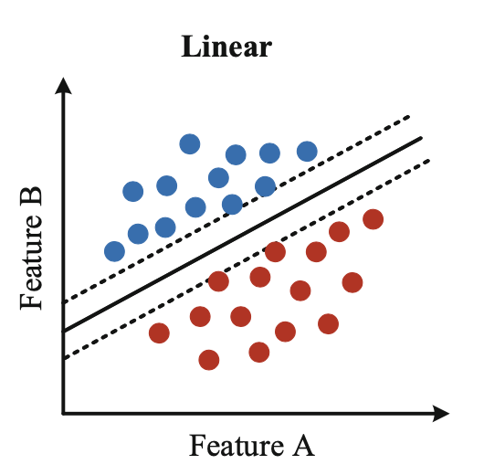
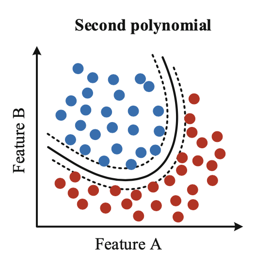
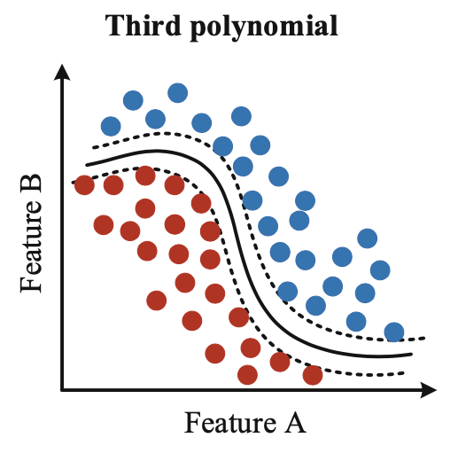
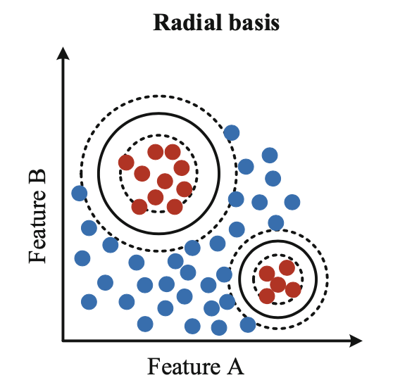
Focusing on the Gaussian kernel, we are dealing with two parameters that determine the final solution: the coefficient \(\lambda\), which we already know from the SVM model, and the coefficient \(\sigma\), which rescales the “area of influence” of each point in the dataset. In Figure fig-metodi-kernel-gaussiano-lambda-sigma-grid-search an example of a grid search based on these parameters is reported; in reality, these are the relative inverse parameters, being \(\gamma=\frac{1}{\sigma}\) and \(C=\frac{1}{\lambda}\).
We notice how moving to the right, and therefore decreasing \(\sigma\), the so-called decision boundaries are much more detailed, complex and jagged, due to the reduced influence that each point exerts around itself. A globally similar phenomenon also occurs as \(\lambda\) decreases, going down, since the model tends to decrease the margin by penalizing classification errors more heavily.
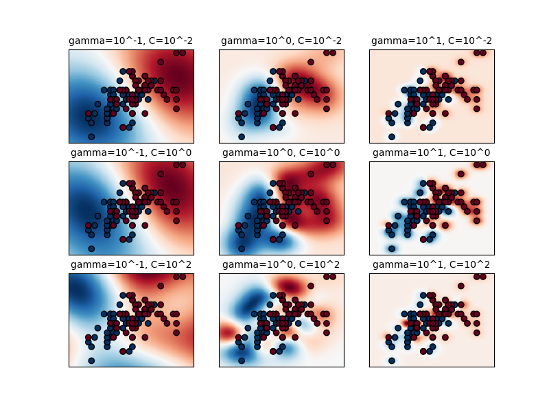
11.6 Multiclass Classification
Through the introduction of kernel methods we have significantly enhanced the learning capabilities of our models, allowing them to handle non-linearly separable data and to work in high-dimensional spaces without having to explicitly transform the elements. It is possible to take a further step forward: so far, in fact, we have only considered binary classification problems. In reality, it is possible to extend these methods to multiclass classification problems.
There are two possible types of approach for these classification problems:
One-versus-All
Given \(n_c\) classes, \(n_c\) binary classifiers are trained, each of which is able to distinguish between one class and the remaining ones. Each sample \(\boldsymbol{x}\) is associated with the class whose classifier \(\boldsymbol{\boldsymbol{w_i}}\) produces the highest score, that is
\[ \argmax\left(\sprod{x}{w_i}\right) \]
One-versus-One
Given \(n_c\) classes, \(\frac{n_c\left(n_c-1\right)}{2}\) binary classifiers are trained, each of which is able to distinguish between a pair of specific classes, ignoring the remaining \(n_c-2\). Each sample \(\boldsymbol{x}\) is associated with the class that obtains the highest number of “victories”, metaphorically considering the individual classifications as “challenges” between two classes.
An example of multiclass SVM classification is shown in Figure fig-metodi-kernel-classificazione-multiclasse-lineare, in which two different kernels are shown for the same training set. In Figure fig-metodi-kernel-classificazione-multiclasse-gaussiana, on the other hand, the same example is taken up again with a Gaussian kernel but with different \(\gamma\), to show how the region of influence of the points in the set varies.
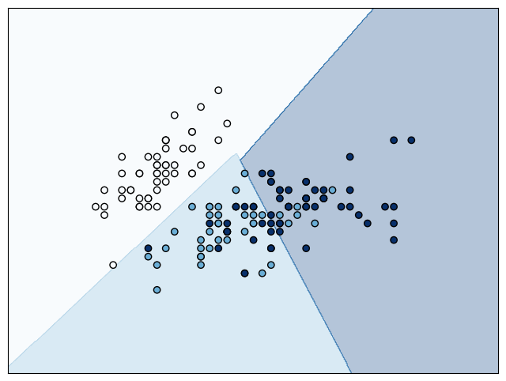
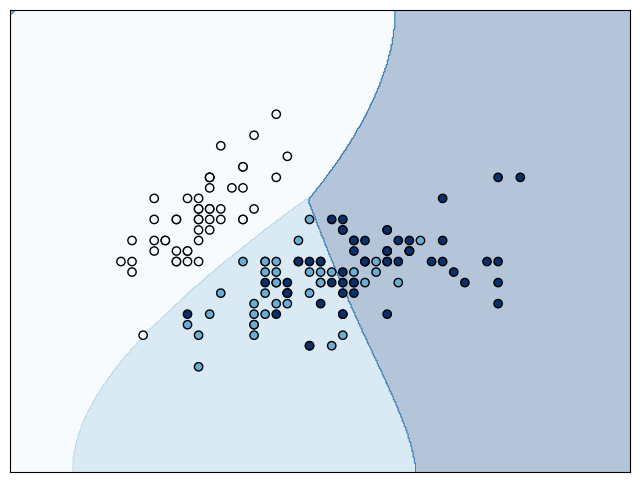
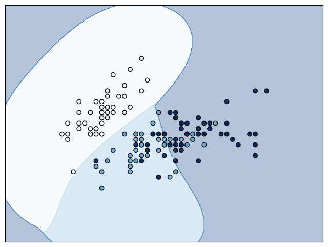
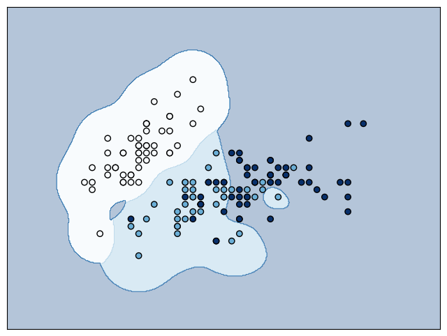
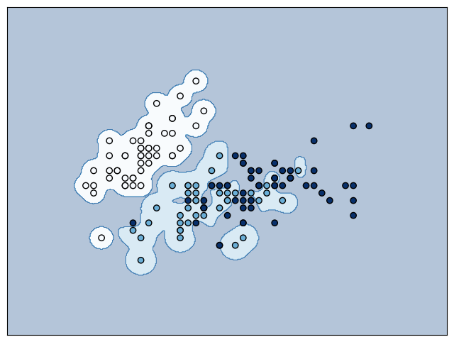